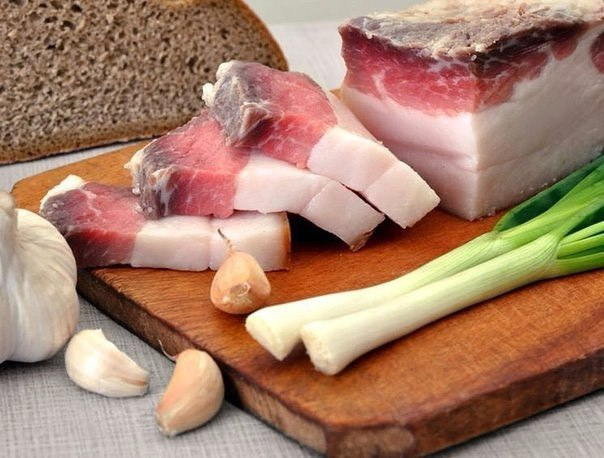

Сало – это животный жир, и нужен он организму так же, как и жир растительный. Это не просто жир, а жир подкожный, в котором содержатся клетки и сохранившиеся биологически активные вещества. Суточная доля жиров – 60-80 грамм в день, из них растительные жиры составляют одну треть. Сало близко к растительным маслам по содержанию незаменимых жирных кислот: олеиновой, линоленовой, линолевой, пальмитиновой – эти кислоты называют витамином F.
Ещё сало содержит арахидоновую кислоту, которая отсутствует в растительных маслах, и в которой нуждаются гормоны и иммунные реакции. Это одна из незаменимых жирных кислот, являющаяся частью фермента сердечной мышцы и участвующая в холестериновом обмене.
Эти незаменимые кислоты чистят сосуды от холестериновых отложений.
В сале большое содержание витаминов А, Д, Е и каротина.
Судя по его составу, сало является необходимым продуктом для поддержки иммунитета и общего жизненного тонуса, что особенно актуально в холодные периоды. Ведь биологическая активность сала выше биологической активности говяжьего жира и сливочного масла в пять раз!
Не приносит ли употребление сала вреда организму?
Если человек здоров, то свиное сало его желудком усвоится без проблем, не перегружая при этом печень.
Свиное сало относится к тем ценным жирам, которые быстрее остальных перевариваются, так как плавятся они при температуре около 37 градусов, что схоже с температурой нашего тела.
Холестерина в сале гораздо меньше, чем в сливочном масле, и он идёт на создание иммунных клеток, защищающих организм от вирусов. А содержащийся в сале витамин F, как уже упоминалось, является профилактикой атеросклероза.
Вредно ли жареное сало? При жарке сало, конечно, теряет часть полезных своих свойств, приобретая взамен канцерогены и токсины. Но то же самое можно заметить и за растительными маслами, которые при нагревании усваиваются значительно хуже. А вот подогретое сало, напротив, усваивается лучше холодного или горячего (сильно прожаренного). Так что лучше его греть на маленьком огне.
Сало хорошо брать с собой на работу для перекусывания в рабочее время. Оно отлично усваивается, не перегружая печень, подпитывает организм энергией, да и вообще гораздо полезнее булочки, пирожка и даже самой дорогой колбасы, которые Вы могли бы съесть на работе, если бы не захватили из дома пару кусочков сала с хлебом.
Важно отличать сало, которое является подкожным жиром, от похожих продуктов, вроде шейки, бекона, которые являются внутримышечным жиром.
Полезно обычное соленое сало с перцем или чесноком. А если копченое, то только домашнего копчения, с дымком, а не закопченное по технологии «жидкого дыма», как сейчас принято делать на мясокомбинатах.
Сало не рекомендуется есть при нарушениях выработки желчи, которая нужна для его переваривания.
Толстеют ли от сала?
Ну, конечно же! Как и от хлеба, батона, яиц, творога, мяса, рыбы, курицы, фруктов, ягод… Если съедено количество калорийностью больше, чем рекомендуется суточной потребностью.
От самого сала не толстеют, если только оно не употреблено в больших количествах. При сидячем образе жизни можно безбоязненно потреблять до 30 грамм сала в день. Ну а если у Вас уже имеется лишний вес, то Ваша дневная норма сала будет не более 10 грамм плюс овощи. Если с желудком у Вас проблем не имеется, то лучше всего есть сало вместе с черным хлебом, или с зерновым с добавлением отрубей.
Целебные свойства сала, польза сала
Народная медицина давно рассмотрела пользу сала, не только гастрономическую, но и лечебную.
Сало, как средство при суставных болях
Часто сало действует гораздо лучше, чем специальные мази. Больные суставы нужно смазывать топленым салом (смальцем) на ночь, накладывая сверху бумагу для компрессов и дополнительно укутывая чем-нибудь шерстяным. Можно для такого компресса использовать и старое свиное сало, пропустив его через мясорубку. Нужно только добавить в него чуточку мёда.
Сало, как средство для увеличения подвижности суставов после травм
Смешиваются 100 грамм свиного жира и одна столовая ложка поваренной соли, затем это втирается в область сустава. Сверху накладывается согревающая повязка.
Сало, как средство при мокнущей экземе
Смешиваются две столовые ложки несоленого перетопленного свиного жира, два яичных белка, 100 грамм паслена и один литр сока из чистотела. Смесь тщательно перемешивается, настаивается 2-3 дня, после чего её можно смазывать больные места.
Сало, как средство против зубной боли
Очищенный от соли и кожи, небольшой ломтик сала прикладывается между щекой и десной к больному зубу на 20 минут. Зубная боль должна постепенно утихнуть.
Сало, как средство при мастите
Для этого нужен кусочек старого сала, а не свежего. Он прикладывается к месту воспаления, фиксируется лейкопластырем, а сверху накладывается согревающая повязка.
Сало, как средство при пяточной шпоре
Из ста грамм несоленого свиного сала, одного сырого куриного яйца и ста грамм уксусной эссенции готовится мазь, которая должна находиться в темном месте при периодическом помешивании, до полного растворения яйца и сала. Когда мазь будет готова, проводится лечебная процедура. На распаренную в горячей воде пятку прикладывается пропитанный мазью ватный тампон, который нужно закрепить, например, надев носок. Держится мазь всю ночь, а утром теплой водой смываются её остатки. Для лечения пяточной шпоры должно хватить пять дней.
Сало, как средство от опьянения
Обволакивая желудок, сало мешает моментальному всасыванию алкоголя через желудок. Алкоголю ничего не остается, как проходить дальше, в кишечник, где он всё равно впитается, но уже постепенно.
Еще сало с алкоголем является прекрасным сочетанием по той причине, что спиртное помогает быстрому перевариванию жира и разложению его на компоненты.
Сало можно употреблять не только с водкой, но и с красным сухим вином (говорят, что очень вкусно).
Источник : http://fanparty.ru/fanclubs/salo-drugs/tribune/95151